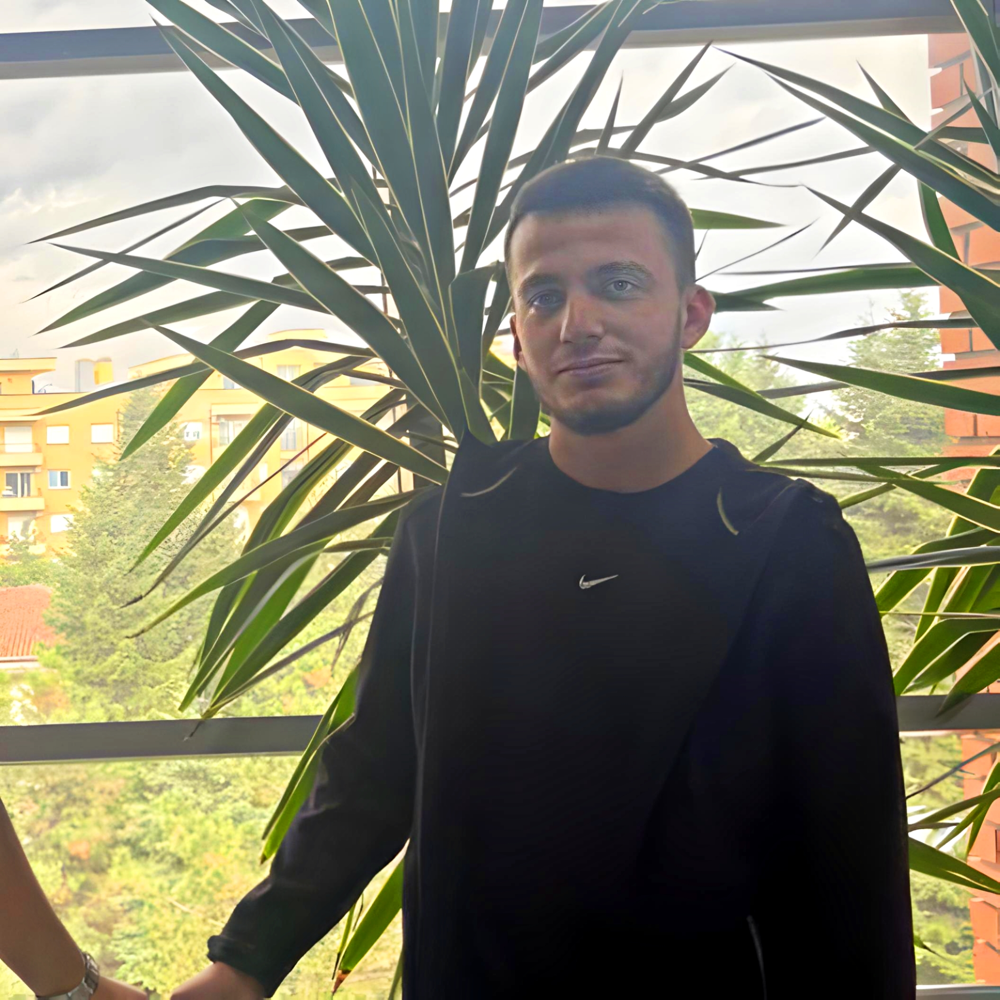

Për ne Farukat sfidat janë ato që na forcojnë, duke na kalitur shpirtin dhe mendjen, por është vullneti dhe dëshira ato që na shtyjnë përpara. Edhe kur kushtet dhe gjithçka dukej kundër nesh, dëshira jonë për të krijuar, për të treguar histori, për të bërë filma, nuk na ka munguar kurrë. Është kjo zjarr i brendshëm që na udhëheq, duke na bërë të kapërcejmë çdo pengesë dhe të besojmë se arti gjithmonë gjen një rrugë për të shkëlqyer.
Që nga shkrimi i skenarit, te regjia, aktrimi dhe montazhi, çdo hap i procesit realizohet nga dyshja jonë. Me besim dhe bashkëpunim, ne e sjellim në jetë vizionin tonë unik, duke dëshmuar se një film i madh nuk ka nevojë për një buxhet të madh mjaftojnë idetë e mëdha.
"Andaj, për më shumë se 5 vite kemi arritur të sjellim tema dhe projekte të ndryshme, duke i bërë ato vite të jenë vitet e arta të jetës sonë.
Me shpresën dhe pasionin që na kanë udhëhequr gjithmonë, besojmë se do të takohemi përsëri në filmin tonë të radhës.